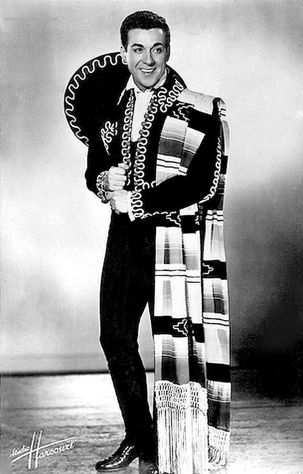

| Nom de naissance | Mariano Eusebio González y García |
|---|---|
| Naissance | 13 août 1914
Irun, Guipuscoa, Espagne |
| Nationalité | Espagnol |
| Décès | 14 juillet 1970 (à 55 ans)
Paris, France |
| Activité principale | Chanteur |
| Activités annexes | Acteur |
| Genre musical | Opérette |
| Années actives | 1943 - 1969 |
| Site officiel | luismariano.com |
Mariano Eusebio González y García, dit Luis Mariano, né le 13 août 1914 à Irun et mort le 14 juillet 1970 à Paris, est un ténor basque espagnol, chanteur d'opérette qui jouira d'une très grande popularité en Amérique latine, en France, en Espagne et au Québec.
Il accéda à la célébrité en 1945 grâce à La Belle de Cadix, opérette de Francis Lopez ou encore Le Chanteur de Mexico. Il devint alors, à la scène comme au grand écran, le prince de l'opérette.
Il vécut la majeure partie de sa vie en France et sa tombe au cimetière d'Arcangues est encore visitée et fleurie par ses fans plus de quarante ans après sa mort1.
Luis Mariano n'a jamais été marié. À 16 ans il tombe amoureux d'une jeune Basque d'Irun, Maria-Pilar Eguiluz qui est déjà engagée et dont le fiancé, soldat, ne reviendra jamais du front. Maria-Pilar restera célibataire jusqu'à sa mort en 2004 à 87 ans11. Selon Patxi Lacan, homme de confiance et chauffeur de Mariano, on connaît deux femmes au ténor : Martine Carol à partir de 194812 et Carmen Sevilla à partir de 1950. Il demande cette dernière en mariage, mais elle refuse, se sentant trop jeune pour sacrifier sa carrière13.
Après 1953, on ne connaît plus de femme dans la vie de l'artiste. Des rumeurs circulent sur ses préférences homosexuelles mais elles sont démenties par des proches de l'artiste comme le comédien et peintre Guy-Pierre Geneuil14. Christophe Mirambeau a cependant révélé dans sa biographie Saint Luis que « Carmen Sevilla ne voulait pas avoir de relations avec un monsieur dont elle savait qu'il était homosexuel » et que Mariano aurait eu une aventure masculine avec un soldat, ce qui vaut au biographe la rancœur tenace des marianistes15. Un autre biographe, Henry-Jean Servat, lève ce tabou dans son livre Luis Mariano, les mélodies du bonheur : « Mariano était gay »16.
L'ancien agent artistique Dominique Besnehard affirme, au détour d'une réponse sur l'homosexualité dans les milieux artistiques, publiée en février 2015, que « Luis Mariano avait une garçonnière pour garçons et [que] tout le métier le savait. »17.